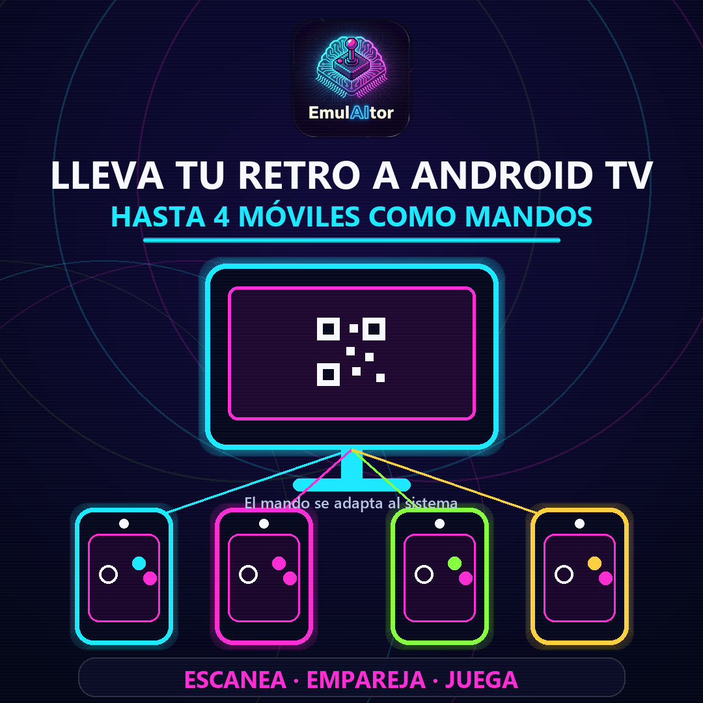

Hasta cuatro móviles o tabletas
Reúne al grupo alrededor de Android TV y utiliza cada dispositivo como un mando independiente.
Escanea un QR y convierte teléfonos o tabletas en mandos para Android TV. El diseño se adapta al sistema que estés jugando.
Descargar EmulAItor Ver todas las funciones
Reúne al grupo alrededor de Android TV y utiliza cada dispositivo como un mando independiente.
Escanea el código mostrado por EmulAItor para conectar cada mando dentro de la red Wi-Fi local.
El mando táctil cambia automáticamente según el sistema clásico que estés jugando.
Combina el control táctil con mandos Bluetooth o USB y juega como prefiera cada persona.
Abre EmulAItor en Android TV, muestra el QR y convierte los dispositivos del grupo en mandos. La configuración queda preparada para volver a jugar.
EmulAItor permite utilizar hasta cuatro móviles o tabletas como mandos.
Cada dispositivo escanea el QR mostrado en Android TV dentro de la misma red Wi-Fi.
Sí. El diseño se adapta al sistema jugado y también puede seleccionarse manualmente.